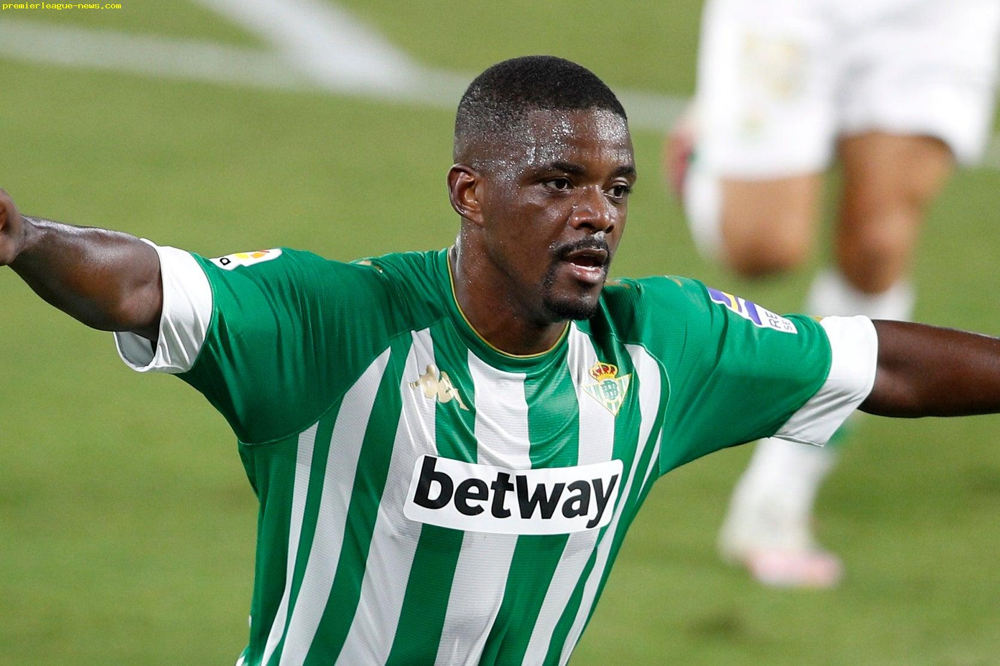

Final Score: Real Betis 2-3 Real Madrid
An 82nd minute Sergio Ramos penalty lifted Real Madrid over Real Betis, in what proved to be a very entertaining match. Here are five key takeaways:
1. Zidane Puts Out Another Surprise Lineup
After last weekend’s goalless draw with Real Sociedad, I expected Zidane to tinker with his starting 11, as the Frenchman often makes changes to his squad after a poor outing. What I did not expect was to see the out-of-favor Luka Jovic leading the line with Karim Benzema, as well as the return of Zidane’s classic 4-4-2 diamond formation. Jovic was disappointing today (which was expected as he hasn’t had any serious match time in months), and his only real contribution to the game was drawing the foul that earned Emerson his red card. When Real Madrid didn’t have possession, he was near invisible, and this really hurt the team’s ability to pressure Betis. The 4-4-2 also didn’t work as planned. With Casemiro, Valverde, Kroos, and Ødegaard (and after half time Modric and Isco), you would expect Real Madrid to dominate the midfield, but this did not happen. Instead, the midfielders were frantic in possession, and this allowed Betis to win the ball upfield easily. I believe if the team switches permanently to this formation, and the squad’s fitness improves, this system will allow them to dominate the league, but as of now, it probably would have been smarter to stick with the usual 4-3-3.
3. An In-Form William Carvalho Is The difference-maker For Real Betis
Since the 2020/2021 season began, Carvalho has been Real Betis’ best player. He’s scored 2 goals in their 3 matches so far this season, including a great goal against Real Madrid on Saturday night. He flew into the box in the 37th minute and received a pass from Nabil Fekir, took one touch and slotted the ball into the near-post gap to beat Thibaut Courtois, putting Real Betis ahead.
While Carvalho may be overperforming on the attacking side, he’s beginning to return to his best on the defensive side of things. Last season was horrible for Carvalho, and he was one of the reasons that the team finished 15th last year. Real Betis had serious defensive problems, and the team leaked goals. This season, the whole defense has improved, and Carvalho should receive some of the credit. His defensive positioning and awareness are highly underrated, and he is excellent at using his large frame to body others off of the ball. His leadership skills are also huge to this Betis team, and if he continues to perform at the level he did against Real Madrid, then Betis should expect to finish in a much higher position in the table than they did last season.

4. Manuel Pellegrini Has Made Progress In Seville, But There Is Still Work To Do
Pellegrini had a challenge ahead of him when he took charge of this Real Betis team, as he needed to take a squad of underperforming players and restore them into the players that they used to be. In the 2019/2020 season, Betis had the second-worst defense in La Liga, conceding 60 goals in 38 matches. It seems that Pellegrini has turned that aspect around, as they have only conceded 3 goals in the 3 matches that they’ve played this season (all of those goals were against Real Madrid, meaning that they’ve also kept 2 clean sheets as well).
While this is a great start, Pellegrini still has much work to do. Teams usually perform well when a new manager arrives, and Pellegrini will have to make sure that he can keep his Betis side performing well for the entire season, as the club is known to be wildly inconsistent. If he wants to enjoy lasting success in Seville, he will have to implement his own style into the team (which it looks like he has begun to do), as that is the key to performing well in La Liga.
5. It Only Took Two Games To Get Some Real Madrid/Referee Controversy
Real Madrid won the match in the 82nd minute from a Sergio Ramos penalty earned from a handball by Marc Bartra that was forced by Borja Mayoral. The only issue was, Mayoral was clearly offside in the buildup, and the penalty should never have been given. It was a blatant mistake by the referees and V.A.R., and it only makes the league look worse. Real Madrid have been known (especially after the restart last season) to have received some favorable calls from the referees in La Liga and in international competitions, and this should have been remedied by V.A.R., but sadly this is not the case. It is sad to see a team win in an unfair manner, and Real Madrid will count themselves as lucky to leave Seville with 3 points.